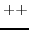

6585 bcopy (from, to, count)
int *from, *to;
{
register *a, *b, c;
a = from;
b = to;
c = count;
do
*b++ = *a++;
while (--cc);
}
The function of this procedure is very simple: it copies a specified number of words from one set of consecutive locations to another set.
There are three parameters. The second line
int *from, *to;
specifies that the first two variables are pointers to integers. Since no specification is supplied for the third parameter, it is assumed to be an integer by default.
The three local variables, a, b, and c, have been assigned to registers, because registers are more accessible and the object code to reference them is shorter. ``a'' and ``b'' are pointers to integers and ``c'' is an integer. The register declaration could have been written more pedantically as
register int *a, *b, c;
to emphasise the connection with integers.
The three lines beginning with ``do'' should be studied carefully. If ``b'' is a ``pointer to integer'' type, then
*b
denotes the integer pointed to. Thus to copy the value pointed to by ``a'' to the location designated by ``b'', we could write
*b = *a;
If we wrote instead
b = a;
this would make the value of ``b'' the same as the value of ``a'', i.e. ``b'' and ``a'' would point to the same place. Here at least, that is not what is required.
Having copied the first word from source to destination, we need to increase the values of ``b'' and ``a'' so that the point to the next words of their respective sets. This can be done by writing
b = b+1; a = a+1;
but ``C'' provides a shorter notation (which is more useful when the variable names are longer) viz.
b++; a++;
Now there is no difference between the statements ``b++;'' and ``++b;'' here.
However ``b++'' and ``++b'' may be used as terms in an expression, in which case they are different. In both cases the effect of incrementing ``b'' is retained, but the value which enters the expression is the initial value for ``b++'' and the final value for ``++b''.
The ``'' operator obeys the same rules as the ``++'' operator, except that it decrements by one. Thus ``c'' enters an expression as the value after decrementation.
The ``++'' and ``'' operators are very useful, and are used throughout UNIX. Occasionally you will have to go back to first principles to work out exactly what their use implies. Note also there is a difference between *b++ and (*b)++.
These operators are applicable to pointers to structures as well as to simple data types. When a pointer which has been declared with reference to a particular type of structure is incremented, the actual value of the pointer is incremented by the size of the structure.
We can now see the meaning of the line
*b++ = *a++;
The word is copied and the pointers are incremented, all in one hit.
The line
while (--c);
delimits the end of the set of statements which began after the ``do''. The expression in parentheses ``c'', is evaluated and tested (the value tested is the value after decrementation). If the value is non-zero, the loop is repeated, else it is terminated.
Obviously if the initial value for ``count'' were negative, the loop would not terminate properly. If this were a serious possibility then the routine would have to be modified.